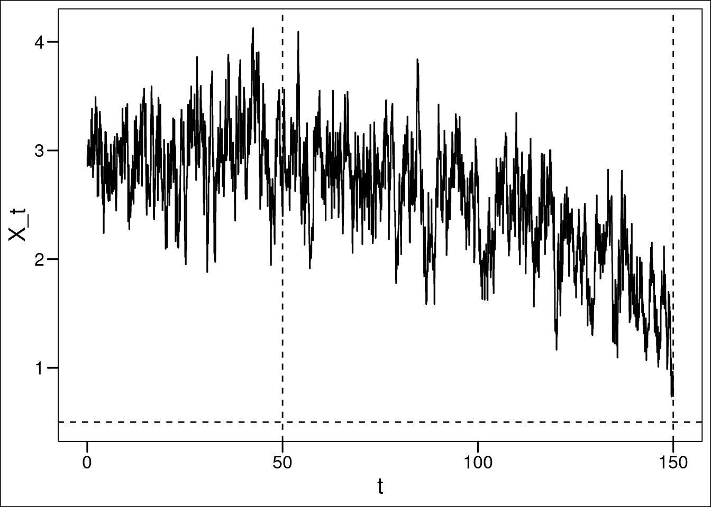
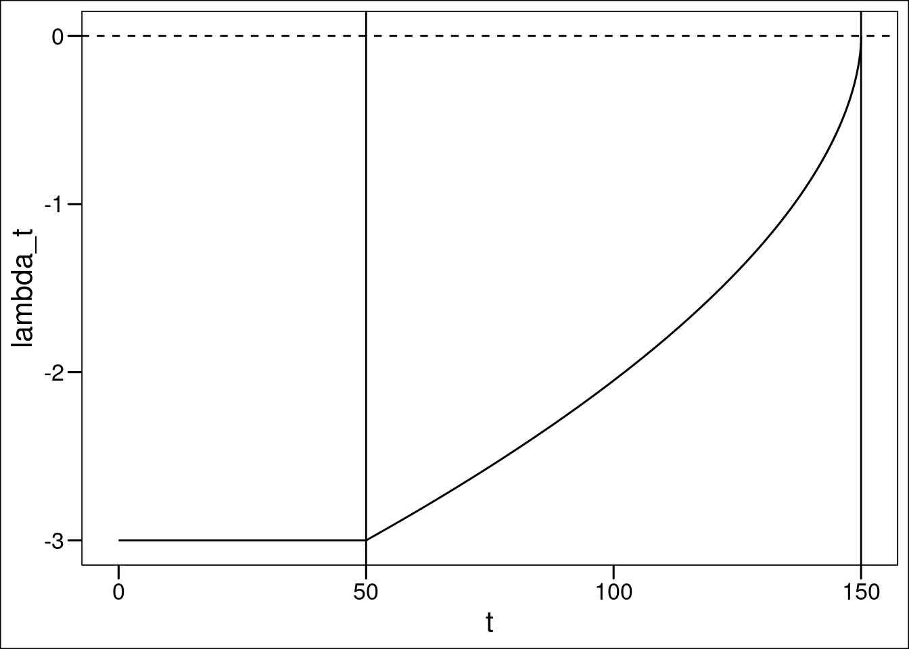
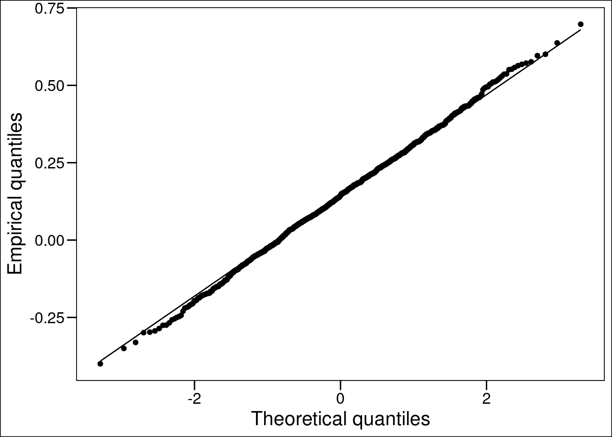
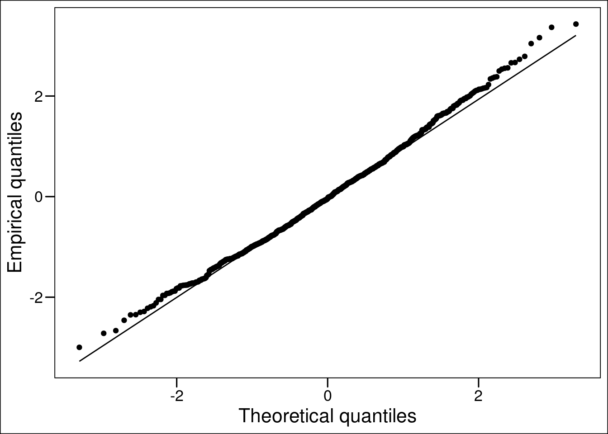
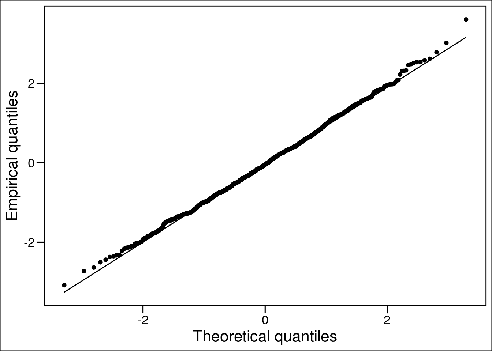
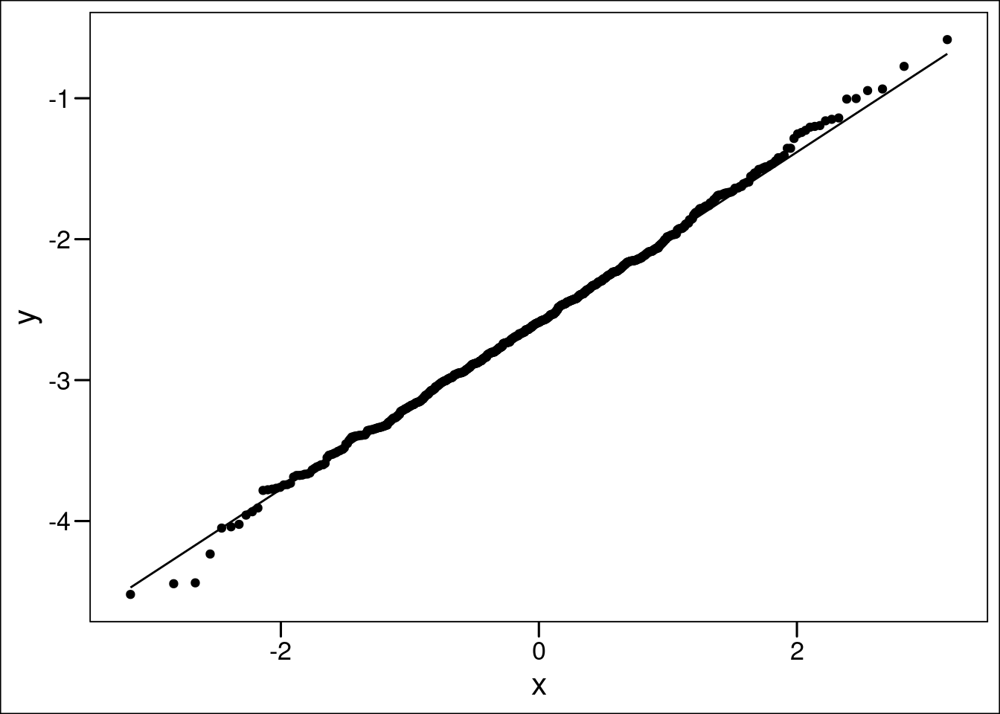
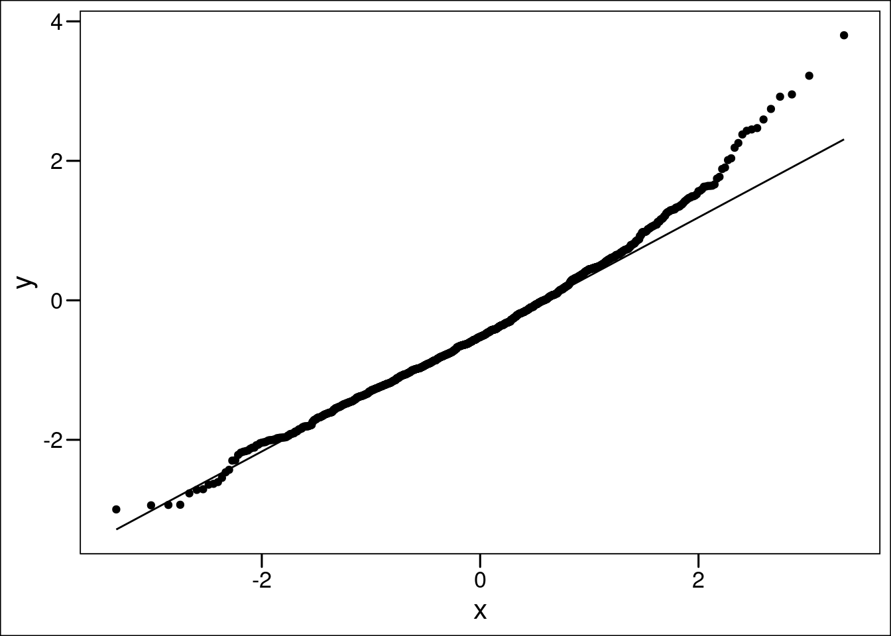

# Square-root noise model
set.seed(100)
true_param <- c(0.5, 0.5, -3, 0.5 , 0.55)
actual_dt <- 0.05
tau <- 100
t_0 <- 50
sim_res_sqrt <- simulate_squareroot_noise_tipping_model(actual_dt,
true_param,
tau, t_0)Noter til vejledning
Den overordnede model
Matematisk formulering
\[\begin{align} \mathrm{d}X_t &= -\left(A\left(X_t - m\right)^2 + \lambda_t\right)\mathrm{d}t + \sigma X_t^\kappa \mathrm{d}W_t,\\ \lambda_t &= \lambda_0\left(1-\frac{\max(t-t_0,0)}{\tau_c}\right)^\nu, \nu > 0. & \end{align}\]Med \(\kappa \in\{0, 0.5 , 1\}\)
Alternativt, kan vi muligvis bruge splines eller kovariater til \(\lambda_t\).
Eksempel på simulering og fitting med \(\kappa = 0.5\)
Simulation
Simulér med \(A = 0.5\), \(m = 0.5\), \(\lambda_0 = -3\), \(\sigma = 0.5\) og \(\nu = 0.55\).


Fitting og validering
Stationære del af processen
Procentuel afvigelse fra sande parametre: 11.59152 0.3342913 3.212281
Dynamiske del af processen misspecificeret med \(\nu = 1\).
Procentuel afvigelse fra sande parametre: 19.53541 29.51159
Dynamisk del - korrekt specificeret
Procentuel afvigelse fra sande parametre: -0.04999993 -12.67071 -24.36924
Punkter fra mailen
1-2. Modelvalideringsmetoder til simulerede likelihoods og Strang vs simulerede likelihood
Den simulerede likelihood ser sådan ud
OU_dynamic_simulation_likelihood <- function(par, data, times, M, N,
alpha0, mu0, sigma, t_0){
tau <- par[1]
A <- par[2]
nu <- if(length(par) == 3) par[3] else 1
m_tip <- mu0 - alpha0/(2 * A)
lambda0 <- -alpha0^2 / (4 * A)
delta <- 1 / M
#time <- delta * (1:(N-1))
lam_seq <- lambda0 * (1 - (times[-length(times)]-t_0) / tau)^nu
lam_mat <- t(matrix(rep(lam_seq, length.out = N * length(lam_seq)),
nrow = length(lam_seq), ncol = N))
# Number of data points
numData <- length(data) - 1
dW <- array(dqrng::dqrnorm(N * M * numData, mean = 0, sd = sqrt(delta)),
dim = c(M, N, numData))
# Initialize the process array
X <- array(NA, dim = c(M, N, numData))
X[1, , ] <- rep(data[-length(data)], each = N)
for (m in 2:M){
X[m, , ] <- X[m - 1, , ] - (A * (X[m - 1, , ] - m_tip)^2 + lam_mat) *
delta + sigma * dW[m - 1, , ]
}
second_to_last_X <- t(X[M - 1, , ])
sigma_t <- sigma * sqrt(delta)
mu_t <- data[1:numData] -
(A * (second_to_last_X - m_tip)^2 + lam_seq) * delta
densities <- dnorm(data[-1], mean = mu_t, sd = sigma_t, log = TRUE)
loglik <- -mean(colMeans(densities))
if(is.na(loglik) | is.infinite(loglik)){
print("NA Likelihood")
return(1000000)
}
loglik
}3. Flere likelihood implementeringer?
Lamperti-transformationerne, som vi skal bruge for \(\kappa \neq 0\) afhænger af \(t\).
4. Datamangel
Har prøvet lidt af med \(\exp\) på AMOC-fingerprint, men ellers synes jeg mit data (og jeg har fundet meget) ikke fitter særligt godt. Har dog kun prøvet med \(nu = 1\).
amoc_fit_data <- sqrt(exp(AMOCdata$AMOC2))
CIR_stationary_part_AMOC <- CIR_quadratic_martingale(
amoc_fit_data[AMOCdata$time<1924], 1/12
)
CIR_stationary_part_AMOC[1] 2.9686651 1.1388398 0.2894347
dynamic_part_true_param <- c(180, 1)
CIR_dynamic_part_AMOC <- optimize_dynamic_likelihood(
likelihood_fun = CIR_dynamic_likelihood,
data = amoc_fit_data[AMOCdata$time>=1924],
init_par = dynamic_part_true_param,
delta = 1/12,
alpha0 = CIR_stationary_part_AMOC[1],
mu0 = CIR_stationary_part_AMOC[2],
sigma = CIR_stationary_part_AMOC[3])
CIR_dynamic_part_AMOC[1] 1201.9239045 0.1593196
5. Generel valg af \(\kappa\)
Giver det mening at snakke om det, hvis der er tid? \(\kappa = 1\) opfører sig i forvejen ikke altid super pænt…
6. Brugen af splines, kovariater eller den parametriske form, jeg har fundet på.
Se R-script: “cubicSplines.R”